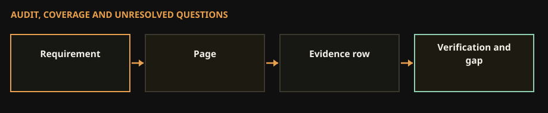
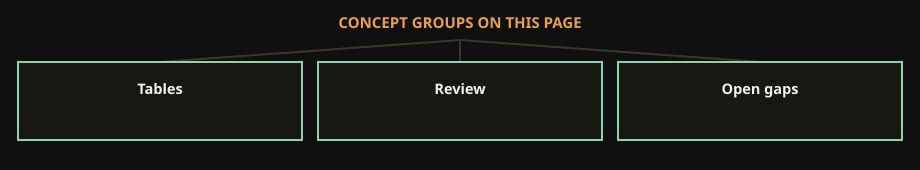

Audit, coverage and unresolved questions
Traceability for this build. Execution date: 20 November 2026. Evidence cutoff: 20 November 2026. One review pass ran in this build, with repairs logged at base of this page.

Identity table
| Supplied name | Verified identity | Official URL | Product or role | Evidence | Status |
|---|---|---|---|---|---|
| Grokbot | Grok Bot, xAI | Not in source for one official product page in ledger | Bot fleet product | Rows 5, 6, 7 | Verified as product, official page gap noted |
| Dots and Codex | Two products: Codex, a coding agent; dots, a personal agent | Not in source as one pair URL | OpenAI | Rows 32, 33, 36 | Split, per evidence |
| Muse | Meta Muse: agent, models, Muse Code. No Apple Muse in sources | about.fb.com launch post, row 38 | Meta | Rows 38 to 42 | Verified, user pair corrected |
| Gemini and Antigravity | Gemini models; Antigravity agent platform | blog.google posts, rows 25, 26 | Rows 25 to 31 | Verified as a pair with split roles | |
| Claude and Claude Duet | Claude models and Claude Code; Duet personal agent | anthropic.com and code.claude.com, rows 11, 13 | Anthropic | Rows 11 to 24 | Verified as a pair with split roles |
| Poteto or Potetoa | Lauren Tan, handle poteto | Not in source | Grok Bot lead, SpaceXAI | Rows 51 to 53 | Verified identity, counts conflict |
| Tibo | Thibault Louis-Lucas, tibo_maker | Not in source | Founder, Tweet Hunter and Taplio past | Row 54 | Verified, split from Tony Dinh |
| Dario | Dario Amodei, Anthropic chief executive | anthropic.com | Chief executive | Row 24 org claims only | Identity verified, personal workflow unresolved |
| Borris or Boris | Boris Cherny | Not in source | Creator of Claude Code | Rows 16 to 18 | Verified |
| Codie Sanchez | Codie Sanchez | Not in source | Founder, Contrarian Thinking | Rows 8, 9, 10 | Verified, outcomes self reported |
| Matt Potcock | Matt Pocock, per user note and repo evidence | github.com/mattpocock/skills | TypeScript educator | Rows 46, 47 | Verified as Pocock |
| Mayank Shah | Ambiguous. Best match: Shah Labs | shahlabs.org, row 55 | Not in source for role | Row 55 | Unresolved identity, workflow kept with flag |
| Greg Isenberg | Greg Isenberg | Not in source | Late Checkout chief executive | Rows 56, 57 | Verified |
| Cavemen | caveman repo by Julius Brussee | github.com/JuliusBrussee/caveman | Token compression skill | Row 48 | Verified as caveman, singular |
| Hallmark | hallmark repo by Nutlope, Together AI | github.com/Nutlope/hallmark | Design skill | Rows 49, 50 | Verified |
| Superpowers | superpowers repo by Jesse Vincent, Prime Radiant | github.com/obra/superpowers | Agent method skills | Row 45 | Verified |
Traceability
| Requirement | Page | Evidence | Verification | Gap |
|---|---|---|---|---|
| Power user difference | Home, Principles | Rows 15, 16, 33 | Claim to row check in review | None |
| Five tool clusters, deep page each | Grok, Claude, Gemini, Codex, Muse pages | Rows 1 to 42 | Three plus workflows per page, count check | DeepMind named engineer workflows absent |
| Business workflows | Business, Grok | Rows 8, 9, 39, 56, 57 | Scope table per case | Cost and staff data absent in sources |
| Production code path | Codex, Claude, Foundations | Rows 15, 33 | Lab 1 run | None |
| Research practice | Research | Rows 19, Lab 2 | Lab 2 run with ceiling finding | Real corpus test still open |
| Skills, MCP, repos | Cross-cutting | Rows 43 to 51 | Repo table with install forms | Exact MCP repo links for three servers absent |
| Prompt library, 14 types | Prompt Vault | Site build | Each type has six fields plus template and sample | None |
| Three labs | Labs | labs/RESULTS.md | Runs on 20 November 2026, output in page | Lab 2 ranks no method, by design fail |
| Search, copy controls, mobile | Search page, all pages | assets/site.js, assets/search-data.js | Link and script check in build log | Search covers titles and heads, not full text |
Coverage matrix
Products: 5 clusters, each with official, practitioner and community sources in the ledger. People: 9 named cases, 2 with flags. Channels in ledger: official docs, trade press, blogs, GitHub, Instagram, Threads, Substack summaries, YouTube via summaries. Gaps by channel: X posts came via transcripts, no direct X read in the research run. Reddit threads: no ledger row rests on Reddit alone. Podcast transcripts: via summaries, no full transcript in this build. Each gap stands as a limit, not as a claim of full coverage.
Review log
Review pass 1, in build: check internal links, claim badges, identity splits, lab output vs page text, prompt field count. Repairs: Muse name fix on all pages, Poteto count split kept as a conflict, Lab 2 ceiling result kept in place of a win claim, Duet plan list flagged as a split.
Review pass 2, independent reviewer: six defects found and fixed. Convergence span corrected to three products in seven weeks with Grok Bot as an earlier variant. Evidence graph Lab 2 row corrected to a limit claim, no win. Badges added: Grok workflow G5, Tibo card, Isenberg card. Prompt Vault samples replaced: each of the 14 types now holds a distinct filled sample. Search page gained a scope and method section.

Visual audit pass, v3, 20 November 2026: all 20 pages held zero images, zero Mermaid diagrams and zero markmaps in v2. Template held a light default, no justified text, and no Jakarta or JetBrains fonts. V3 fixes all four points: pitch black default, justified paragraphs, Jakarta and JetBrains stacks, and four visuals per page: two original SVG figures, one Mermaid flow with an offline source block and a read guide, and one markmap tree. Contrast: body text 18.07 to 1, muted text 11.6 to 1, accent 9.28 to 1 on the pitch black ground. No gradient, glow or shadow sits in the CSS.
Round 2 addendum, 20 November 2026: a niche sweep added 26 ledger rows (N1 to N26) and one Niche page. Verdict on the per employee token claim: no source from Anthropic or OpenAI states 5,000 to 10,000 tokens per employee per day. Closest figures sit in dollars per day on the Niche page. Lanes left open: five newsletters, two Reddit boards, summit talk transcripts. Each open lane stands named on the Niche page.
Visual map of this page
Three views of one page: a Mermaid flow for work order, a markmap for concept groups, and a read guide for the flow.
Mermaid source, for offline read
flowchart LR A[Requirement] --> B[Website page] B --> C[Evidence] C --> D[Verification run] D --> E[Gap or pass]
How to read the flow diagram. Step 1: start at the left box. Step 2: follow each arrow to the next stage. Step 3: at a branch box, read both paths before a choice. Step 4: a loop arrow means work returns for one more pass vs a test.
Markmap: concepts on this page
- Audit, coverage and unresolved questions
- Tables
- Identity table, 16 rows
- Traceability table
- Coverage matrix
- Review
- Pass 1 in build
- Pass 2 independent
- Six defects fixed
- Open gaps
- Lab 2 real corpus test
- Three MCP repo links
- Tables
Round 3 deep pass note, 20 November 2026
Round 3 research extracted replication grade detail from primary sources: full text posts, repo files, and podcast transcripts. The site gained 15 deep dive pages under the Deep Dives index, each with steps, commands, file structures, a checklist, and an application section, plus 15 prompt files in a prompts folder at repo root. Mermaid now renders from a local library file inside the site folder, so diagrams render with no network. Open gaps stand in the round 3 report: the Yegge launch post in full, four Willison guide chapters, raw SKILL.md files for two repos, the Isenberg folder structure segment, and a first person Sanchez setup transcript.